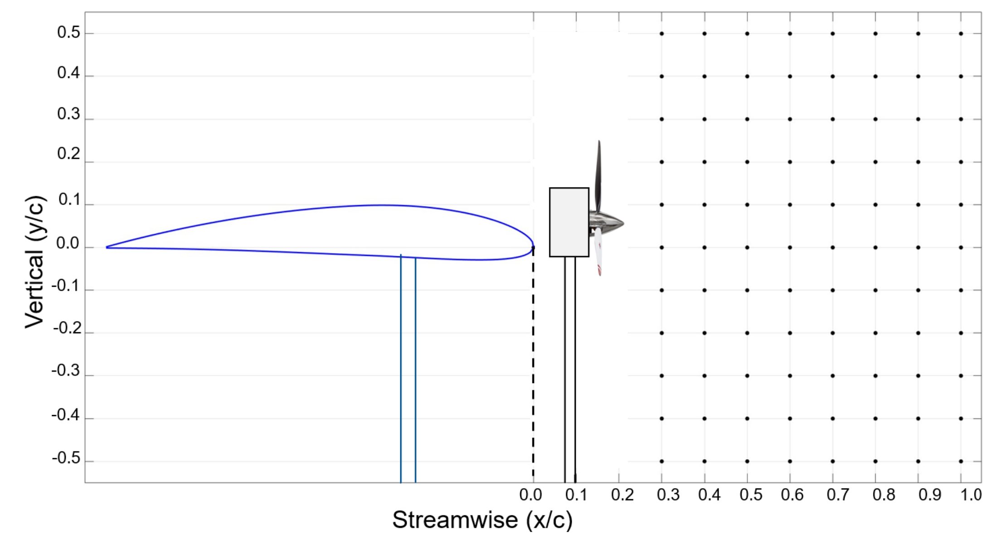
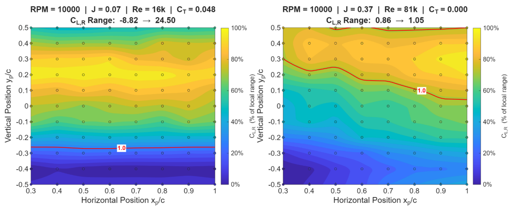
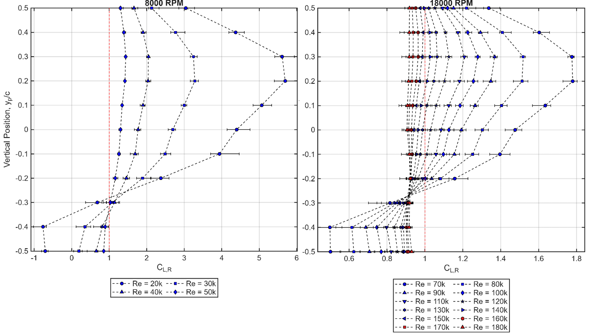
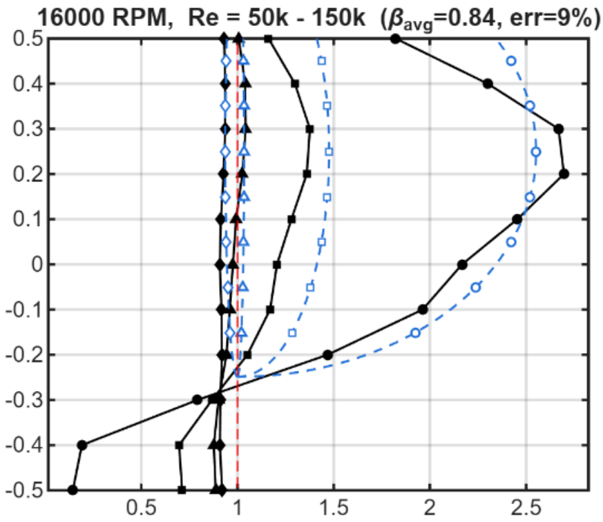

We swept a small propeller through 88 positions ahead of a wing in a wind tunnel to find where it adds the most lift, and tested whether a simple textbook estimate can predict the result.

Electric motors are small enough to place along a wing, so designers are no longer forced to put propellers wherever a drive shaft allows. A propeller in front of a wing speeds up the air passing over part of it. That extra airspeed raises the wing's lift, an effect called lift augmentation. Earlier studies agreed that the propeller's height relative to the wing matters more than how far forward it sits, but almost all of them used wings with flaps at moderate to high angles of attack. We tested the simpler case: a cambered wing, no flaps, zero angle of attack, propeller aligned with the wing chord.
We used a NACA 4412 wing with a 14 cm chord (aspect ratio 3.26) and a propeller one chord in diameter. The propeller ran at six speeds from 8,000 to 18,000 RPM in airflow below 20 m/s (Reynolds numbers below 200,000).
How to read the results. We report the lift ratio, CL,R: the wing's lift with the propeller running divided by its lift without it, at the same airspeed. A ratio of 1 means no change. Above 1 the propeller helped, and below 1 it hurt.
Blown-wing designs are not new. The NASA X-57 Maxwell and Electra.aero's ultra-short takeoff and landing (uSTOL) aircraft distribute propellers across the wing, and the McDonnell Douglas YC-15 used externally blown flaps decades earlier. The same aerodynamics are relevant to small fixed-wing UAVs, which fly at low Reynolds number, meaning slow, small-scale airflow where the air behaves less predictably.
Kuhn's semiempirical method showed that a propeller raises the dynamic pressure in its slipstream by its thrust per unit disk area. Dynamic pressure is what lift scales with, so the part of the wing inside the slipstream produces more lift. Veldhuis, Patterson, Fei et al., and Srivathsan and Rauleder then found that vertical position dominates. Height changes both how much of the wing sits in the slipstream and how fast the air is at that point. Streamwise position changes little, because the slipstream only speeds up marginally with distance.
Kuhn's method implies that lift should still be augmented for a cambered wing at zero angle of attack, but none of the studies we reviewed had tested it. Several also tilted the propeller relative to the wing, which adds lift directly from thrust. We wanted to isolate the augmentation without flaps or tilt.
The wing was held at zero geometric angle of attack and its lift was measured with a six-axis load cell. A single propeller was moved by a two-axis traverse under the tunnel floor through 88 stations, from 0.3 to 1.0 chords ahead of the wing in 0.1 chord steps and from 0.5 chords below to 0.5 chords above the chord line. The first 0.2 chords ahead of the wing could not be tested because of the propeller mount.
At each RPM, we tested the tunnel speeds where the propeller ran above 75% of its peak efficiency. Advance ratio, J, compares the airspeed to the propeller's tip speed, so a low J means a heavily loaded propeller in slow air. The unblown wing was measured separately at each Reynolds number, because its lift changes strongly with Reynolds number below 100,000.


The size of the augmentation depended strongly on advance ratio. At low J, the best positions gave several times the unblown lift, for example a ratio of 6.02 at 8,000 RPM and J = 0.14. Part of this is because the unblown wing makes very little lift at those slow speeds. Near J = 0.4, the best positions gained only about 1 to 5%, and many positions lost lift. Lift augmentation at higher J is therefore a modest gain that depends on choosing the right height.
Engineers want a quick first estimate before committing to full analysis. Strip theory with actuator disk theory treats the part of the wing inside the slipstream as seeing the higher dynamic pressure, and the rest as unchanged. It assumes no slipstream swirl, no contraction, and a sharp slipstream edge. Compared with our measurements, the theory got the trend right but was biased in a way that depended on the regime.
Applying one β value together with a 0.25 chord upward shift of the theoretical curve brought the estimate to within about 10% of the measured lift ratio on average for the four higher RPM settings (9 to 16% depending on RPM), for propeller heights from -0.2 to 0.5 chords. We hypothesize that the shift accounts for upwash ahead of the leading edge, but we have not tested this.

Limits. The single β correction held only for the higher RPM, higher advance ratio regime. At low RPM it disagreed significantly with the data, and errors for individual Reynolds numbers could be up to double the average. The theory also performed worse below the wing and could not reproduce the plateau. Extending the correction to other wing camber, angle of attack, flap, and propeller diameter combinations will need further testing.
For a cambered, unflapped wing at zero angle of attack, vertical propeller position is the primary design variable for maximizing lift augmentation, and streamwise position is secondary. Placing the propeller 0.2 to 0.3 chords above the wing gave the greatest augmentation in every case we tested, while placing it well below the wing generally reduced lift. Simple strip theory can be made useful for the higher RPM, advance ratio and Reynolds number cases we tested with one scale factor and one upward shift.
This page summarizes the paper for a general audience. Figures are reproduced from the paper. The PDF has the full methodology and data.